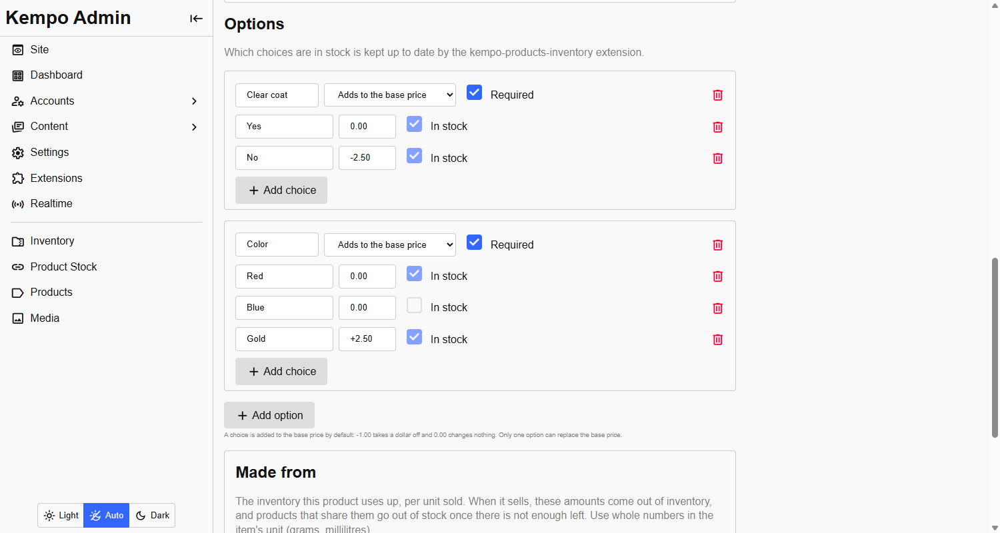

<page pageName="Made from" title="Made from - Kempo Products Inventory">
  <content>
    <h2 id="panel">The Made from panel</h2>
    <p>Open a product in <strong>Products</strong>. The <strong>Made from</strong> panel lists the inventory items one unit of the product uses up. Add a row for each material, pick the inventory item, and enter how much one unit uses. Saving the product saves the links.</p>
    <div class="mb">
      
      <small class="d-b tc-muted">A product with four materials. Black resin and TPU are always used; the paint depends on the colour chosen.</small>
    </div>
    <p>Only people with <code>products:update</code> and <code>kempo-inventory:items:read</code> can link materials. A product with no materials is untouched: its stock stays whatever you set, and selling it takes nothing from inventory.</p>

    <h2 id="choices" class="mt">Only with one choice</h2>
    <p>A material can apply <strong>always</strong>, or <strong>only when one choice of an option is selected</strong>. A model car with a Color option can use red paint for Red and blue paint for Blue, and the resin for every colour.</p>
    <div class="mb">
      
      <small class="d-b tc-muted">The Color option the paint rows above refer to. Options are set up in kempo-products.</small>
    </div>
    <ul>
      <li>When a purchase is recorded, only the materials that match the choices bought are taken.</li>
      <li>A choice is marked <strong>sold out</strong> when there is not enough of the materials it needs for one more, even if other colours are fine.</li>
      <li>A link to a choice must name an option and a choice that exist on the product, or saving is refused.</li>
    </ul>

    <h2 id="units" class="mt">Units</h2>
    <p>Inventory counts <strong>whole numbers with no unit</strong>. Pick the smallest sensible unit and keep every material in it: 175 g, not 0.175 kg; 20 ml, not 0.02 l. The amount per unit is also a whole number.</p>

    <h2 id="from-item" class="mt">Make a product from an item</h2>
    <p>For a piece you already made, open the item in the inventory admin and choose <strong>Make product from this item</strong>.</p>
    <div class="mb">
      
      <small class="d-b tc-muted">The panel under an inventory item's form.</small>
    </div>
    <p>The new product form opens with the name filled in and the item already listed as its material, <strong>one for one</strong>, so the product's stock is the item's quantity. Fill in the price and the rest, and save. This panel exists because kempo-inventory lets another extension add to its item page; see <a href="https://dustinpoissant.github.io/kempo-inventory/extending.html#item-actions" target="_blank">Adding to the item page</a>.</p>

    <h2 id="stock-managed" class="mt">Stock is managed for you</h2>
    <p>A product made from inventory is marked as <strong>maintained by this extension</strong>. Its stock, and which choices are in stock, show as read-only in the products admin, so an edit there cannot be silently overwritten by the next recalculation.</p>
    <p>To change such a product's stock, change the inventory it is made from. To take it back by hand, remove its materials and the product returns to normal stock handling.</p>
  </content>
</page>
